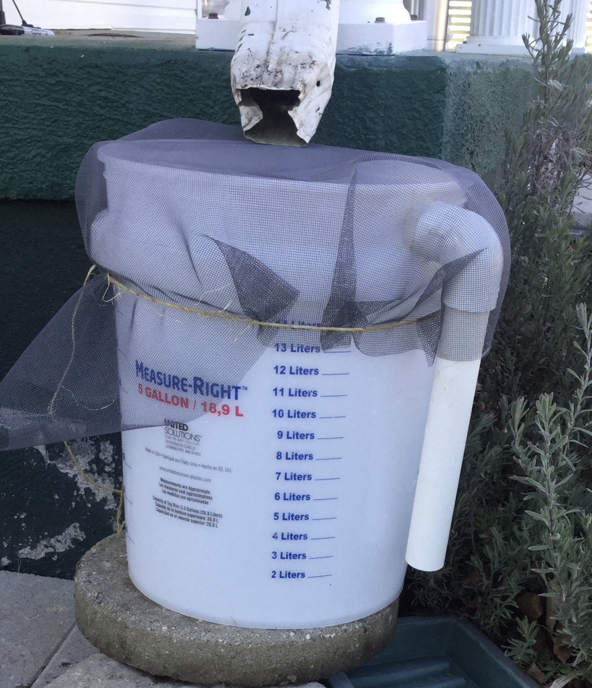

 I made a rain bucket for putting rainwater into my fish tank. That way, my fish tank will become a real habitat with rainwater in it. Rainwater is better for fish because it doesn't have any chemicals in it. I had noticed earlier that some of my plants in the aquarium were dying because of the chemicals in the water.
List of Supplies for Rain Barrel
This project wasn't all too hard, and it worked pretty well.
First, I drilled a 1 1/2 inch hole with a hole saw in the rim of the bucket. Next, I put the one piece of PVC into the hole, attached the elbow so it pointed down, and attached the other piece of PVC pipe. That was so the bucket overflows.
Then, I put the netting over the top of the barrel and tied it with twine. Finally, I positioned the rain bucket under the downspout to catch water.